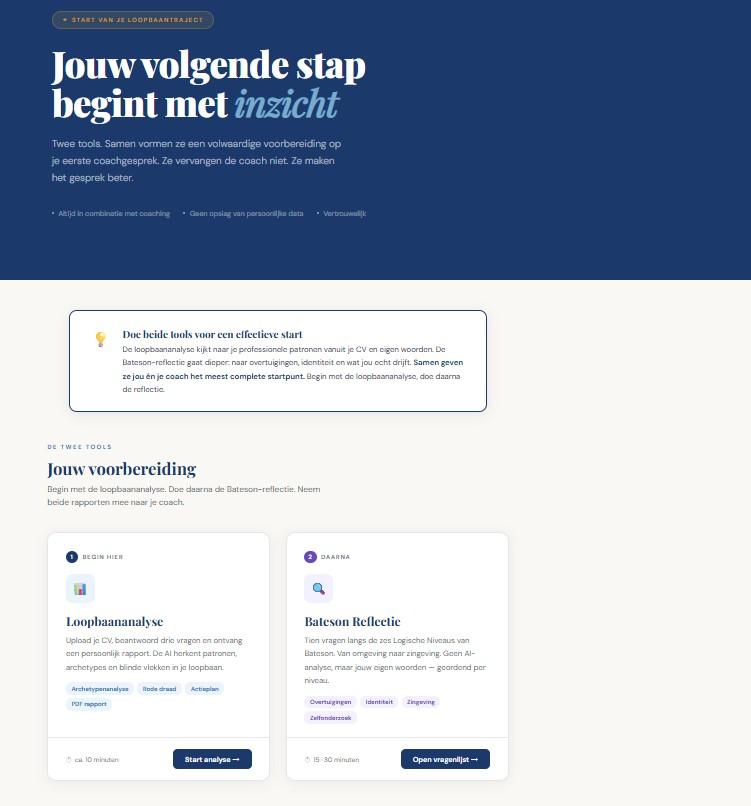
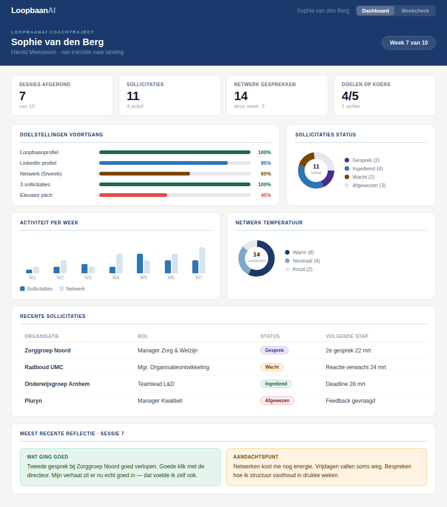

Groei van binnenuit. Voor loopbaan.
Een intensief traject van 10 weken waarin we samen jouw loopbaanverhaal schrijven — van wie je bent tot de baan die bij je past. Inclusief een unieke LoopbaanAI analyse die jouw rode draad en profiel scherp in beeld brengt.
De LoopbaanAI analyse is een bijzonder onderdeel van het loopbaantraject. Jij voert in, ik lees mee. Samen brengen we je archetypen, rolprofiel en drijfveren scherp in beeld — zodat je niet gaat zoeken naar een baan, maar naar jouw baan.
De uitkomst is een gedetailleerd profiel met hypotheses die jij vervolgens toetst in gesprek, in het netwerk en in sollicitatiegesprekken.
Inzicht in wie je bent en wat je écht drijft, gebaseerd op jouw verhalen en patronen.
Wat loopt er door al jouw werkervaring heen? We maken het zichtbaar en voelbaar.
Gerichte aannames die je actief kunt testen — in gesprekken, op LinkedIn en bij werkgevers.
De LoopbaanAI tool

Jouw persoonlijk dashboard

Wat je krijgt
Aandacht voor jou als mens. Patronen herkennen, wat geeft energie, wat houdt je tegen.
Je rode draad, archetypen en rolprofiel scherp in beeld. Hypotheses die jij toetst.
Voortgang, doelstellingen, sollicitaties en reflecties altijd inzichtelijk.
Korte online sessies voor voorbereiding, actuele vragen of sollicitatietraining.
10 sessies van 60 min, persoonlijk en op een vaste plek.
Resterende sessies na een nieuwe baan? Gebruik ze voor een succesvolle start.
Betaling in twee termijnen mogelijk
Ontwikkelbudget of outplacement, op factuur
Hoe het traject eruitziet
Je loopbaanverhaal, patronen en wat je echt zoekt. Doelstellingen voor het traject vastleggen.
Jij voert in, Harold leest mee. Je rode draad en profiel scherp in beeld — archetypen, drijfveren, hypotheses.
Rapport doorlopen, profiel valideren. Wat klopt, wat verrast, wat stel je bij?
Positionering, LinkedIn, netwerk, solliciteren. Wekelijkse check-ins houden je op koers.
Afronden, evalueren en begeleid starten in je nieuwe rol. Het traject stopt niet bij het tekenen.
Een vrijblijvende kennismaking is de beste manier om te ontdekken of dit traject aansluit bij waar jij nu staat.
Plan een kennismaking